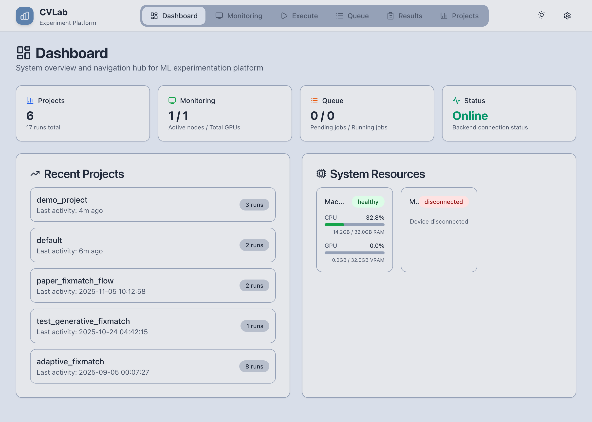
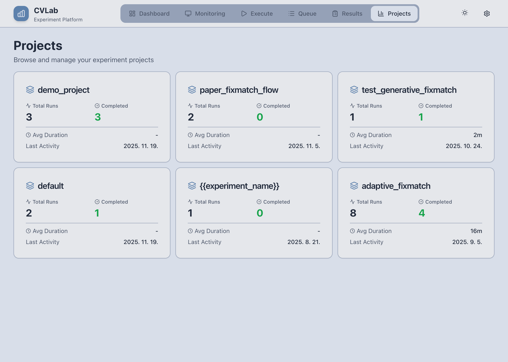
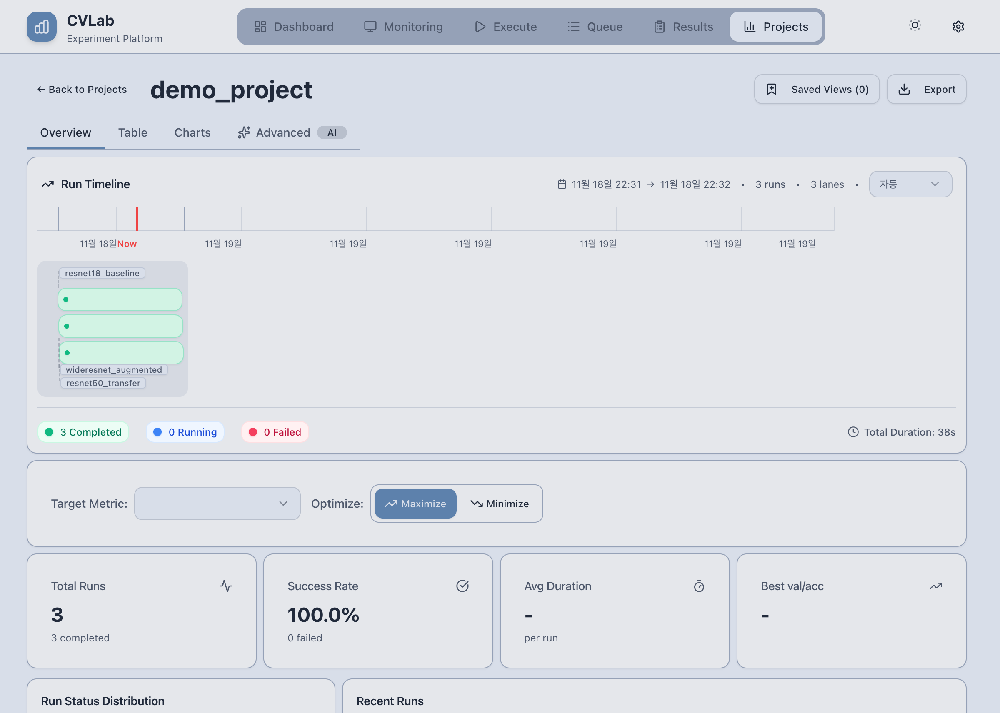
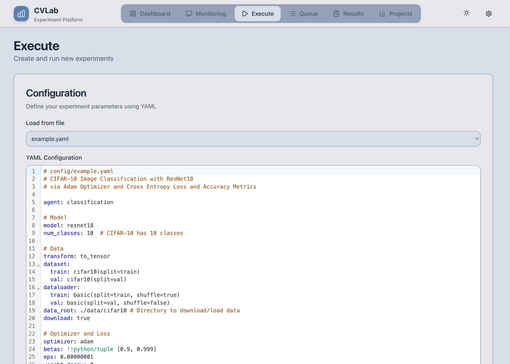
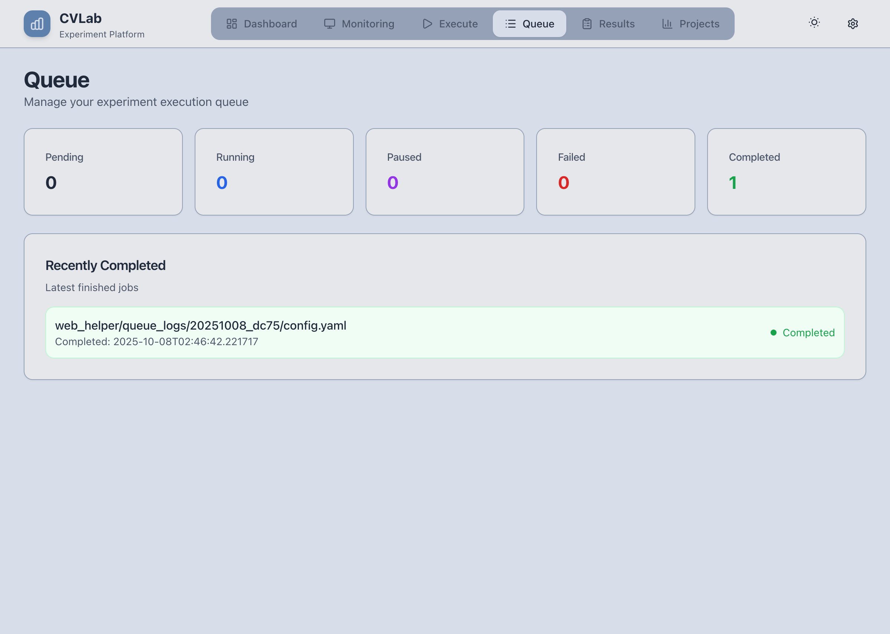
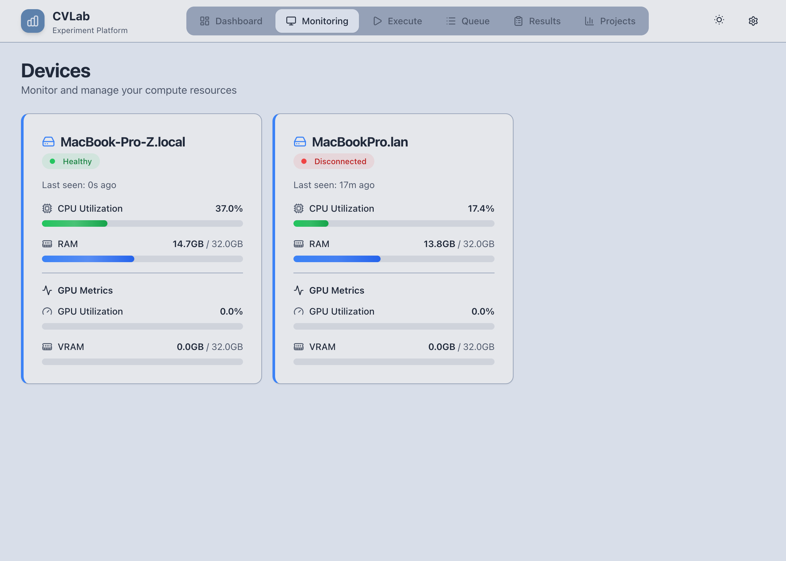
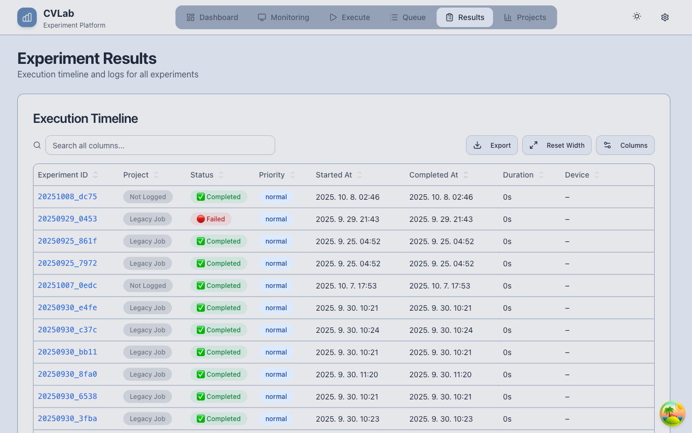

Web Helper 가이드¶
웹 기반 실험 관리 및 결과 분석 플랫폼
Web Helper는 CVLab-Kit의 웹 인터페이스로, 실험 실행, 모니터링, 결과 분석을 한 곳에서 처리할 수 있는 통합 플랫폼입니다.
주요 기능¶
🎯 실시간 실험 모니터링¶
- GPU 사용률 추적: 3초마다 업데이트되는 실시간 heartbeat
- 큐 시스템: 여러 실험을 자동으로 순차 실행
- SSE 스트리밍: 로그, 메트릭, 상태 변화 실시간 반영
📊 결과 분석 및 비교¶
- 메트릭 비교 테이블: 여러 실험 결과를 한눈에 비교
- 차트 시각화: 학습 곡선, 성능 추이, 통계 분석
- 필터링 및 정렬: 프로젝트, 메트릭, 날짜별 필터링
🌐 분산 실행 지원¶
- Server-Client 구조: 중앙 서버가 여러 GPU 클라이언트 관리
- 자동 부하 분산: idle GPU에 실험 자동 할당
- 로그 동기화: 원격 실행 결과를 자동으로 중앙 서버에 동기화
시작하기¶
로컬 실행¶
Backend만 실행 (프로덕션):
Frontend + Backend 개발 모드:
브라우저에서 http://localhost:8000에 접속하세요.
Synology NAS 배포¶
1. compose.yml 다운로드:
- 브라우저에서 docker/compose.yml 열기
- 우클릭 → 다른 이름으로 저장 → compose.yml
2. File Station 업로드:
- File Station → /docker/ 폴더 생성
- compose.yml 업로드
3. Container Manager 프로젝트 생성:
- Container Manager → 프로젝트 탭 → 새로 만들기
- 경로: /docker 선택
- 파일: compose.yml 선택
- 프로젝트 이름: cvlab-kit 입력
- 완료 → 자동 빌드 (5분 소요)
4. 접속:
업데이트: - Container Manager → 컨테이너 선택 → 재시작 (자동 git pull)
데이터 위치:
- 로그: /docker/cvlab-kit/logs/
- 출력: /docker/cvlab-kit/outputs/
- DB: /docker/cvlab-kit/web_helper/state/
설정 변경 (선택):
- compose.yml에서 GIT_REPO 수정 → 본인 repository 사용
분산 실행¶
서버 (중앙 관리):
클라이언트 1:
클라이언트 2:
인터페이스 구성¶
1. Dashboard¶
시스템 전체 개요

주요 기능:
- 전체 프로젝트 현황 (프로젝트 수, 총 실험 수)
- 최근 실험 실행 타임라인
- GPU 사용률 모니터링
- 시스템 상태 한눈에 파악
2. Projects 탭¶
프로젝트별 실험 결과 관리

주요 기능:
- 프로젝트별 실험 결과 목록
- Run 이름, 날짜, 메트릭 한눈에 확인
- 실험 재실행, 삭제, 설정 확인
워크플로우:
- 프로젝트 선택 → 실험 목록 확인
- 특정 실험 클릭 → 상세 정보 모달 열림
- 설정 YAML 확인 → 재실행 가능
프로젝트 상세 화면:

- Timeline: 실험 실행 시간별 분포
- Statistics: 핵심 메트릭 통계
- AI Recommendations: 성능 개선 제안
3. Execute 탭¶
새로운 실험 설정 및 실행

주요 기능:
- YAML 설정 에디터 (CodeMirror)
- Dry-run 검증 버튼
- Grid Search 자동 확장 미리보기
- 큐에 추가 또는 즉시 실행
워크플로우:
- YAML 작성: 에디터에서 설정 파일 작성/수정
- Dry-run 검증: "Validate" 버튼으로 설정 검증
- Grid Search 확인: 리스트 값이 있으면 몇 개 실험 생성되는지 확인
- 큐에 추가: "Add to Queue" 버튼으로 실험 대기열에 추가
팁:
Ctrl+Space: 자동완성Ctrl+F: 검색- Grid Search 사용 시:
lr: [0.001, 0.01, 0.1]형태로 작성
4. Queue 탭¶
실험 대기열 및 실행 상태 관리

주요 기능:
- 실시간 큐 상태 확인 (Pending, Running, Completed, Failed)
- 실험 취소, 우선순위 변경
- 로그 실시간 스트리밍
- 실행 시간, 남은 epoch 확인
상태 표시:
- 🟡 Pending: 대기 중
- 🔵 Running: 실행 중
- 🟢 Completed: 완료
- 🔴 Failed: 실패
워크플로우:
- 실험이 큐에 추가되면 자동으로 idle GPU 탐색
- GPU가 사용 가능하면 자동으로 실험 시작
- 실행 중 로그는 실시간으로 표시
- 완료되면 다음 실험이 자동으로 시작
5. Monitoring 탭¶
GPU 서버 모니터링

주요 기능:
- 모든 클라이언트의 GPU 상태 실시간 확인
- GPU 메모리 사용률, 온도, 사용 중인 프로세스
- 3초마다 heartbeat 업데이트
- Idle/Busy 상태 자동 감지
정보 표시:
- Device Name: 서버 이름
- GPU Model: GPU 종류 (e.g., NVIDIA RTX 3090)
- Memory: 사용 중 / 전체 메모리 (e.g., 8GB / 24GB)
- Utilization: GPU 사용률 (%)
- Status: idle (녹색) / busy (빨강)
팁:
- Heartbeat이 3초 이상 끊기면 클라이언트가 오프라인으로 표시됨
- 여러 클라이언트 연결 시 부하 분산 자동 처리
디바이스 삭제:
- Disconnected 상태 (60초 이상 heartbeat 없음)의 디바이스만 삭제 가능
- 카드 우측 상단의 휴지통 아이콘 클릭
- 삭제 후 목록에서 자동으로 제거
6. Results 탭¶
실험 실행 이력 및 결과 분석

주요 기능:
- 모든 실험 실행 이력을 시간순으로 정렬
- 실험 상태, 메트릭, 실행 시간 확인
- 프로젝트별 필터링
- 실험 재실행 및 상세 정보 확인
워크플로우:
- 타임라인 확인: 최근 실행된 실험들의 시간별 분포
- 필터링: 프로젝트, 상태, 날짜별로 필터링
- 상세 확인: 실험 클릭 시 메트릭, 설정, 로그 확인
- 비교 분석: 여러 실험 선택 후 메트릭 비교
팁:
- 테이블 컬럼 정렬 가능 (클릭)
- 검색으로 특정 실험 빠르게 찾기
- 실패한 실험은 빨간색으로 표시
설정 항목:
- Log Directory:
./logs/(기본값) - Refresh Interval: SSE 업데이트 주기 (기본 3초)
- Theme: Light/Dark 모드
- Reindex: 로그 파일 강제 재스캔
7. Components 탭¶
Agent 및 Component 버전 관리
주요 기능:
- 모든 Agent/Component의 버전 히스토리 관리
- 코드 뷰어 (Outline 네비게이션 포함)
- 버전 비교 및 롤백
- 로컬 파일 스캔 및 서버 동기화
인터페이스 구성:
┌─────────────────────────────────────────────────────────────┐
│ Components │
├──────────────┬──────────────────────────┬───────────────────┤
│ Category │ Code Viewer │ Outline │
│ ├─ agent │ │ │
│ ├─ model │ # Component 코드 │ ├─ Class │
│ ├─ transform │ class MyModel(Model): │ │ ├─ __init__ │
│ └─ ... │ def forward(self, x): │ │ └─ forward │
│ │ ... │ └─ Function │
│ Components │ │ │
│ ├─ resnet18 │ │ │
│ └─ unet │ │ │
└──────────────┴──────────────────────────┴───────────────────┘
워크플로우:
- 카테고리 선택: 좌측에서 agent, model, transform 등 선택
- 컴포넌트 선택: 해당 카테고리의 컴포넌트 목록에서 선택
- 코드 확인: 중앙 코드 뷰어에서 현재 활성 버전 코드 확인
- Outline 네비게이션: 우측 Outline에서 클래스/함수 클릭 시 해당 위치로 스크롤
- 버전 관리: Version History에서 과거 버전 확인 및 Activate로 롤백
버튼:
- Scan Local: 로컬
cvlabkit/폴더 스캔 후 새 버전 등록 - Activate: 선택한 버전을 활성 버전으로 설정 (롤백)
- View: 과거 버전 코드 확인
팁:
- 코드 변경 후 Scan Local로 새 버전 등록
- Outline 클릭으로 긴 파일에서 빠르게 이동
- 문제 발생 시 이전 버전으로 즉시 롤백 가능
자세한 내용: Component Sync 문서
8. Notification 시스템¶
우측 슬라이드 알림 패널
주요 기능:
- 사용자 응답이 필요한 알림 관리
- Component 버전 충돌 시 해결 옵션 제공
- 미응답 알림 자동 저장 (페이지 새로고침 후에도 유지)
알림 유형:
| 유형 | 설명 | 액션 |
|---|---|---|
sync_conflict |
로컬-서버 버전 충돌 | Upload / Download / Skip |
info |
일반 정보 | 확인 |
warning |
경고 | 확인 |
error |
오류 | 확인 |
Sync Conflict 알림:
로컬 코드가 서버와 다를 때 Interactive 모드에서 알림 발생:
- Upload to Server: 로컬 버전을 서버에 업로드하고 활성화
- Download from Server: 서버 버전으로 로컬 덮어쓰기
- Skip: 동기화하지 않고 로컬 유지
사용법:
- 헤더 우측 벨 아이콘 클릭
- 알림 패널이 우측에서 슬라이드
- 각 알림에서 원하는 액션 선택
- 처리된 알림은 자동으로 제거
미응답 알림:
- 브라우저 localStorage에 자동 저장
- 다음 세션에서도 알림 유지
- 벨 아이콘에 미읽음 개수 표시
실시간 기능¶
SSE (Server-Sent Events)¶
Web Helper는 SSE를 사용하여 다음 정보를 실시간으로 업데이트합니다:
// Frontend: SSE 연결 (자동)
const eventSource = new EventSource('/events/stream');
eventSource.addEventListener('device_update', (event) => {
// GPU 상태 업데이트
});
eventSource.addEventListener('queue_update', (event) => {
// 큐 상태 업데이트
});
eventSource.addEventListener('metric_update', (event) => {
// 메트릭 업데이트
});
업데이트 이벤트:
device_update: GPU heartbeat (3초마다)device_removed: 디바이스 삭제 알림queue_update: 큐 상태 변화 (실험 추가/시작/완료)metric_update: 새로운 메트릭 기록log_update: 실행 로그 스트리밍
API 엔드포인트¶
프로젝트 및 실험¶
## 모든 프로젝트 목록
GET /api/projects
## 특정 프로젝트의 실험 목록
GET /api/runs?project=my_project
## 실험 상세 정보
GET /api/run/{project}/{run_name}
## 실험 재실행
POST /api/run/rerun
{
"project": "my_project",
"run_name": "experiment_1",
"config": {...}
}
큐 관리¶
## 큐에 실험 추가
POST /api/queue/add
{
"project": "my_project",
"config_yaml": "...",
"priority": 0
}
## 큐 목록
GET /api/queue
## 실험 취소
POST /api/queue/cancel/{experiment_id}
디바이스 모니터링¶
## 디바이스 목록
GET /api/devices
## Heartbeat 전송 (클라이언트)
POST /api/devices/heartbeat
{
"device_name": "gpu_server_01",
"gpus": [...]
}
## 디바이스 삭제 (disconnected 상태만 가능)
DELETE /api/devices/{host_id}
Component 버전 관리¶
## 전체 버전 목록
GET /api/components/versions
## 카테고리별 목록
GET /api/components/versions/{category}
## 특정 컴포넌트 버전 히스토리
GET /api/components/versions/{category}/{name}
## 해시로 코드 조회
GET /api/components/versions/hash/{hash}
## 새 버전 업로드
POST /api/components/versions/upload
{
"path": "agent/classification.py",
"content": "..."
}
## 버전 활성화 (롤백)
POST /api/components/versions/activate
{
"hash": "a1b2c3d4e5f6..."
}
## 로컬 스캔 후 등록
POST /api/components/versions/scan
실시간 이벤트¶
파일 시스템 구조¶
Web Helper는 파일 기반 통신을 사용하여 cvlabkit과 완전히 분리되어 있습니다.
logs/
├── <project>/
│ ├── <run_name>.csv # 메트릭 (epoch, loss, accuracy, ...)
│ ├── <run_name>.yaml # 실험 설정
│ └── <run_name>.pt # 체크포인트
web_helper/
├── state/
│ └── db.sqlite # 실험 인덱스, 큐, 디바이스 상태
└── queue_logs/
└── <project>/
└── <experiment_id>/
├── config.yaml # 큐 실험 설정
├── stdout.log # 표준 출력
└── stderr.log # 에러 로그
작동 원리:
- cvlabkit (CLI)가
./logs/에 결과 기록 - web_helper가
watchdog로 파일 변경 감지 - 변경 감지 시 DB 업데이트 및 SSE 이벤트 발생
- 프론트엔드가 실시간으로 UI 업데이트
분산 실행 시나리오¶
시나리오 1: 단일 서버 + 여러 클라이언트¶
서버 (중앙 관리, GPU 없음):
클라이언트 1 (GPU 서버 A):
클라이언트 2 (GPU 서버 B):
워크플로우:
- 서버에서 실험 설정 및 큐에 추가
- 클라이언트가 3초마다 heartbeat 전송
- 서버가 idle GPU를 감지하면 실험 할당
- 클라이언트가 실험 실행 후 로그 동기화
- 서버에서 모든 결과 확인
시나리오 2: 로컬 통합 환경¶
로컬 GPU가 있는 경우:
웹 UI + 로컬 GPU 실행 모두 가능
문제 해결¶
실험이 큐에서 시작되지 않음¶
원인:
- 모든 GPU가 busy 상태
- 클라이언트 heartbeat 끊김
- 설정 파일 오류
해결:
- Devices 탭에서 GPU 상태 확인
- 클라이언트 로그 확인:
tail -f /tmp/cvlab_client.log - Execute 탭에서 Dry-run 검증
SSE 연결이 끊김¶
원인:
- 네트워크 문제
해결:
- 브라우저 콘솔에서 에러 확인
- 페이지 새로고침
메트릭이 표시되지 않음¶
원인:
- CSV 파일 형식 오류
- 인덱싱 지연
해결:
logs/<project>/<run_name>.csv파일 확인- Settings 탭에서 "Reindex" 버튼 클릭
- CSV 헤더가 올바른지 확인 (epoch, loss, accuracy, ...)